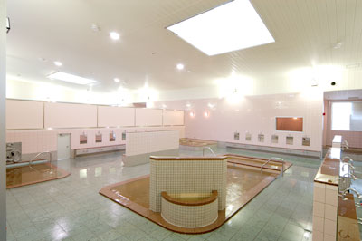
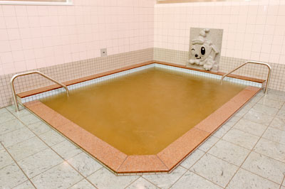

| 面白さ | 快適さ | 料金 | 衛生面 | 周辺施設 |
|---|---|---|---|---|
| 3 | 3 | 3 | 3 | 2 |
今回は青森市の南畑にある「つくだ温泉」さんを訪れました。
正確には後ろに「ゆ～ぽっぽ」という名前が付いており、汽車の造りのお風呂をイメージしているようです。
泉質はナトリウム塩化物泉/硫酸塩泉という事で、神経痛やきりきず、冷え性などに効果があります。
ホールは広く解放感があり、壁や家具なども白が多い事から全体的にとても綺麗にみえました。
脱衣場も片付けられていて、足元が少し濡れているのが気になりましたが、清掃は丁寧に行っている印象を受けます。
肝心のお風呂は浴場が大きく、こちらもホール同様に解放感がありました。

温度は熱すぎるという事もなくとても快適で、ついつい長湯してしまいました笑
また、お湯の色も特徴的で、少し黄色がかったようなお湯になっており、触ってみると少しぬるぬるしており、泉質の効果が出ているようでした。
他にも露天風呂やジェットバス、子供風呂などがあり、子供風呂では楽しそうに子供が泳いでいました。

そして定期的にイベントも開催しているようで、26日は「風呂の日」として入浴料が50円割引されるようです。
見回すと家族で来られてる方が多く、温泉はもちろんの事、雰囲気も温かい温泉施設のように感じました。
全体のスペースが広く、解放感がある事から落ち着いて利用ができる温泉でした。
次は家族全員で伺いたいと思います。